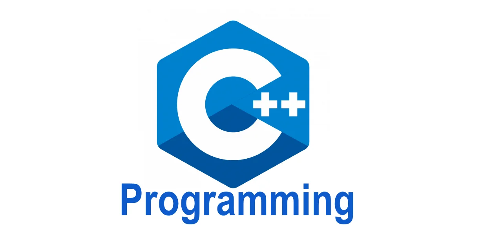

lenguaje de programación de alto rendimiento, de propósito general y compilado, creado por Bjarne Stroustrup en 1979 como una extensión de C con capacidades orientadas a objetos. Es ampliamente utilizado en videojuegos, sistemas embebidos, aplicaciones de escritorio de alto rendimiento (como Adobe Premiere) y software de sistemas debido a su velocidad y control directo sobre el hardware.
Características Clave de C++
Eficiencia: Es muy rápido, más cercano al hardware que lenguajes de alto nivel como Python o Java.
Orientado a Objetos: Permite la manipulación de objetos, lo que facilita la organización del código.
Complejidad: Tiene una curva de aprendizaje pronunciada, pero es muy valorado por su potencia.
Versatilidad: Se usa para crear juegos, aplicaciones en la nube, controladores de dispositivos y más.
Entornos de Desarrollo (IDEs) Comunes
Visual Studio: El entorno recomendado por Microsoft para Windows.
Dev-C++: Un IDE gratuito y ligero, comúnmente usado por principiantes.
Compiladores en línea: Herramientas como OnlineGDB permiten programar directamente en el navegador.
| FUNCIONES | PARA QUE SIRVEN |
|---|---|
| Return | La instrucción return se usa para devolver un valor desde la función al lugar donde fue llamada. |
| Sumar | toma dos parámetros (num1 y num2), realiza la operación de suma y devuelve el resultado. |
| Void | Estas funciones se utilizan generalmente para realizar acciones sin necesidad de devolver un resultado. |